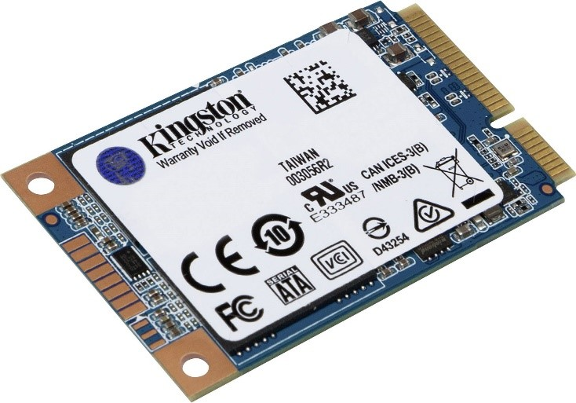

HDD ( Hard-Disk Drive )
La memoria HDD (Hard Disk Drive) è composta da nastro magnetico e contiene parti meccaniche all'interno.
Gli HDD si affidano ai dischi rotanti o ai piatti per leggere e scrivere i dati.
Ogni volta che si richiede al computer di recuperare o aggiornare i dati, il controller I / O indica al braccio dell'attuatore dove si trovano tali dati e la testina di lettura / scrittura raccoglie i dati leggendo la presenza o l'assenza di una carica in ciascun indirizzo. Se la richiesta era di aggiornare i dati, la testina di lettura / scrittura modifica l'addebito sulla traccia e sul settore interessati.
Il tempo necessario per ruotare il piatto e il braccio dell'attuatore per trovare la traccia e il settore corretti è noto come latenza.
Sono più grandi degli SSD e molto più lenti a leggere e scrivere.
SSD ( Solid-State Drive )
Un SSD (Solid State Drive) è una memoria flash e non ha parti in movimento. Di conseguenza, sono più piccoli e occupano meno spazio in una custodia per PC, in alcuni casi addirittura si montano direttamente sulla scheda madre.
L'aggiornamento dei dati è più complesso per gli SSD. Tutti i dati in un blocco devono essere aggiornati quando una parte di essi viene aggiornata. I dati sul vecchio blocco vengono copiati in un blocco diverso, il blocco viene cancellato e i dati vengono riscritti con le modifiche in un nuovo blocco.
Ogni volta che chiedi al tuo computer di recuperare o aggiornare i dati, il controller SSD esamina l'indirizzo dei dati richiesti e legge lo stato di addebito.
Lo storage SSD è molto più veloce del suo equivalente HDD.
Sono più grandi degli SSD e molto più lenti a leggere e scrivere.